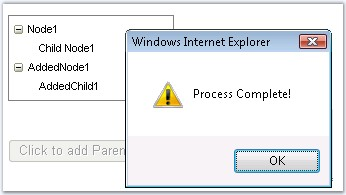

The server side event can be invoked to refresh the data on client side and the client side events can be triggered to execute some defined functions on client side without postback. The various server and client events supported by the CallbackPanel are as follows.
|
Server-Side Event |
Description |
|
CallbackRefresh |
Specifies to execute the event when the data is refreshed on client side. |
|
Client-Side Event |
Description |
|
AfterCallbackResponseProcessedScript |
Specifies the script to execute after the callback result is processed. |
|
AfterCallbackScript
|
Specifies the script function to execute after the callback request is sent to the server. |
|
BeforeCallbackResponseProcessingScript |
Specifies the script to execute before the callback result is processed. |
|
BeforeCallbackScript |
Specifies the script to execute before a callback request is sent to the server. |

Figure 164: Nodes populated in the tree control using callback, which is invoked on button click
To raise the client events, follow the steps given below:
1. Define the client functions that should be executed.
|
[javascript]
function OnRefresh() { _sfCallbackPanel2.callback(); } function BeforeCallback() { document.getElementById('Button1').disabled=true; } function AfterCallback(obj) { alert("Callback Invoked"); } function BeforeResponseProcess() { alert('Processing Script'); } function AfterResponseProcess() { alert('Process Complete'); document.getElementById('Button1').disabled= false; } |
Alert message will be displayed when all the functions are triggered. When the BeforeCallback function is executed, the button will be disabled and in the AfterResponseProcess, the button will again be enabled.
18. Set the client side functions to the function names that has to be executed and which are defined.
|
[aspx]
<ssw:CallbackPanel ID="CallbackPanel2" runat="server" OnCallbackRefresh="CallbackPanel2_CallbackRefresh" BeforeCallbackScript="BeforeCallback()" BeforeCallbackResponseProcessingScript="BeforeResponseProcess()" AfterCallbackScript="AfterCallback()" AfterCallbackResponseProcessedScript="AfterResponseProcess()"> <cc1:TreeView ID="TreeView1" runat="server" BorderColor="Gray" BorderStyle="Solid" BorderWidth="1px" Height="80px" Width="160px"> <Items> <cc1:TreeViewNode Expanded="True" Text="Node1"> <cc1:TreeViewNode Text="Child Node1"> </cc1:TreeViewNode> </cc1:TreeViewNode> </Items> </cc1:TreeView> </ssw:CallbackPanel> <asp:Button ID="Button1" runat="server" Text="Click to add Parent Node" OnClientClick="OnRefresh('Request');return false;" /> |
19. In the code behind file, the nodes are added to the treecontrol in the CallbackRefresh event.
|
[C#]
protected void CallbackPanel2_CallbackRefresh(object sender, Syncfusion.Web.UI.WebControls.Tools.CancellableCallbackEventArgs e) { System.Threading.Thread.Sleep(2000); TreeViewNode rootNode = new TreeViewNode(); rootNode.Text = "AddedNode1"; rootNode.Expanded = true; TreeView1.Items.Add(rootNode);
TreeViewNode firstChild = new TreeViewNode(); firstChild.Text = "AddedChild1"; rootNode.Items.Add(firstChild); } |
|
[VB.NET]
Protected Sub CallbackPanel2_CallbackRefresh(ByVal sender As Object, ByVal e As Syncfusion.Web.UI.WebControls.Tools.CancellableCallbackEventArgs) System.Threading.Thread.Sleep(2000) Dim rootNode As TreeViewNode = New TreeViewNode() rootNode.Text = "AddedNode1" rootNode.Expanded = True TreeView1.Items.Add(rootNode)
Dim firstChild As TreeViewNode = New TreeViewNode() firstChild.Text = "AddedChild1" rootNode.Items.Add(firstChild) End Sub |